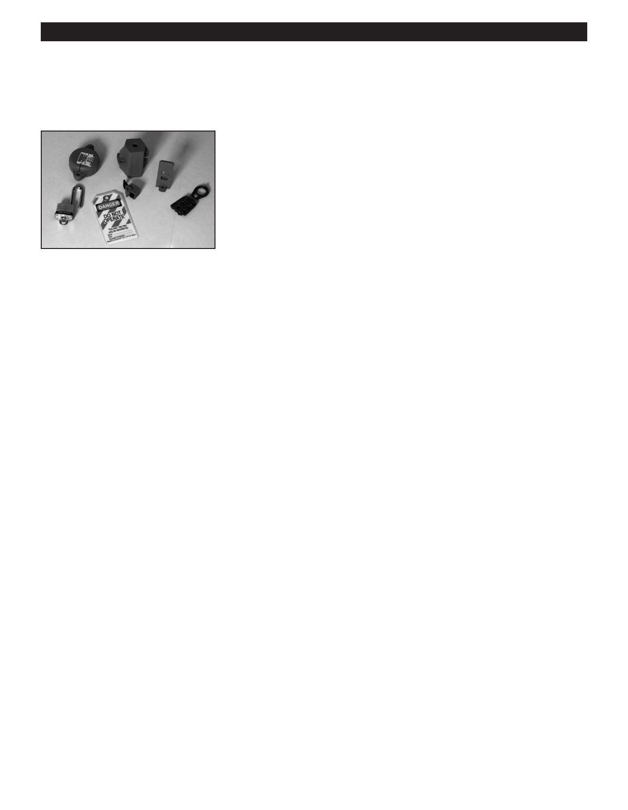

PA RT I C I PA N T R E S O U R C E G U I D E
Key Tools for Heating Repairs (continued)
The Basic Hand Tools
Notes:
Lockout/tagout kits identify that a
power source, such as a main shut-off
valve or circuit breaker, is shut off
and secured.
A wire splicer or crimper can help
you complete repair tasks that involve
splitting, connecting, or bending wire.
9